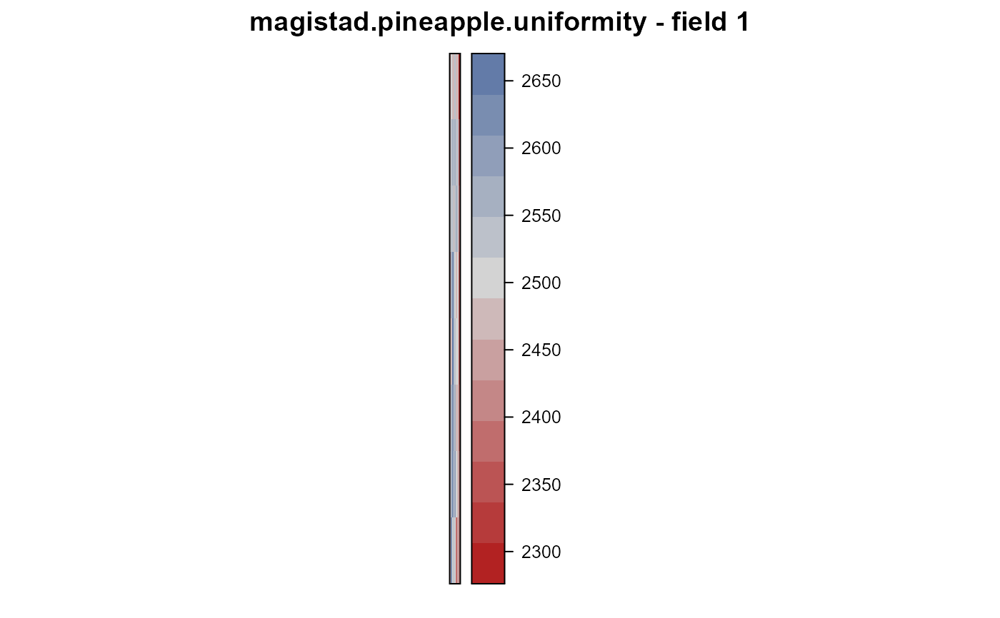
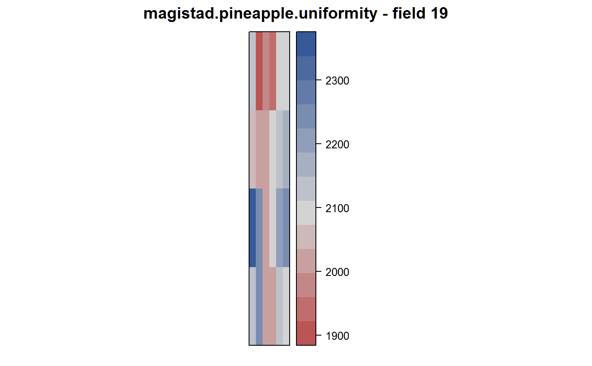
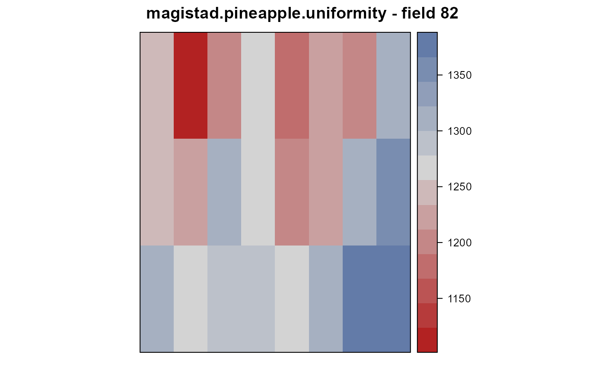
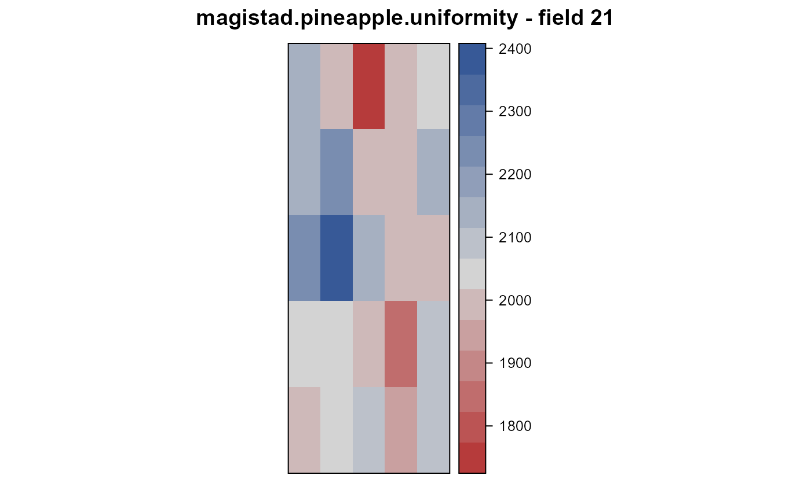

magistad.pineapple.uniformity.RdUniformity trial of pineapple in Hawaii in 1932
data("magistad.pineapple.uniformity")
A data frame with 137 observations on the following 6 variables.
fieldfield number
platplat number
rowrow
colcolumn
numbernumber of fruits
weightweight of fruits, grams
Field 19. Kunia. Harvested 1932.
"In this field, harvested in 1932, there were four rows per bed. A 300-foot bed was divided into four equal parts to form plats 1, 2, 3, and 4. The third [sic, second] bed from this was similarly divided to form plats 5 to 8, inclusive. In the same manner plats 9 to 24 were formed. In this way 24 plats each 75 feet long and 1 bed wide were formed."
Field length: 4 plats * 75 feet = 300 feet
Field width: 6 plats * 6.5 feet = 39 feet
Field 82. Pearl City.
"Eight beds, each separated by two beds, were selected and harvested. Beds were 8 feet center to center. Each bed was divided into three plats 76 feet long."
Note: Layout of plats into rows/columns assumes the same pattern as field 19.
Field length: 3 plats * 76 feet = 228 feet
Field width: 8 plats * 8 feet * 3 (every third bed) = 192 feet.
Field 21. Kahuku.
"In field 21, Kahuku, the experimental plan was of the Latin square type, having five beds of five plats each. The beds were 7.5 feet center to center. Each plat was approximately 60 feet long and each third bed was selected and harvested." Note: Layout of plats into rows/columns assumes the same pattern as field 19.
Field lenght: 5 plats * 60 feet = 300 feet
Field width: 5 plats * 7.5 feet * 3 (every third bed) = 112.5 feet
Field 1. Kunia.
"This experiment was another Latin square test having eight plats in each column and eight plats in each row. It was harvested in 1930. Each plat consisted of two beds 150 feet long. Beds were 6 feet center to center and consisted of three rows each. The entire experimental area occupied 2.85 acres."
Field length: 8 plats * 2 beds * 150 feet = 2400 feet
Field width: 8 plats * 6 feet = 48 feet
Total area: 2400*48/43560=2.64 acres
O. C. Magistad & C. A. Farden (1934). Experimental Error In Field Experiments With Pineapples. Journal of the American Society of Agronomy, 26, 631--643.
None
library(agridat) data(magistad.pineapple.uniformity) dat <- magistad.pineapple.uniformity # match table page 641 ## dat <!-- %>% group_by(field) %>% --> ## summarize(number=mean(number), ## weight=mean(weight)) <!-- %>% as.data.frame --> ## field number weight ## 1 1 596.4062 2499.922 ## 2 19 171.1667 2100.250 ## 3 21 171.1600 2056.800 ## 4 82 220.7500 1264.500 libs(desplot) desplot(weight ~ col*row, dat, subset=field==1, aspect=2400/48, main="magistad.pineapple.uniformity - field 1")desplot(weight ~ col*row, dat, subset=field==19, aspect=300/39, main="magistad.pineapple.uniformity - field 19")desplot(weight ~ col*row, dat, subset=field==82, aspect=228/192, main="magistad.pineapple.uniformity - field 82")desplot(weight ~ col*row, dat, subset=field==21, aspect=300/112.5, main="magistad.pineapple.uniformity - field 21")